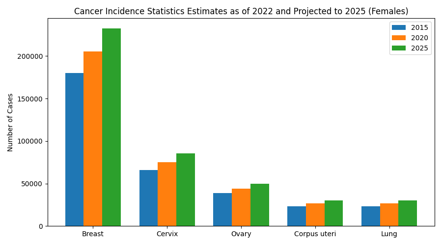
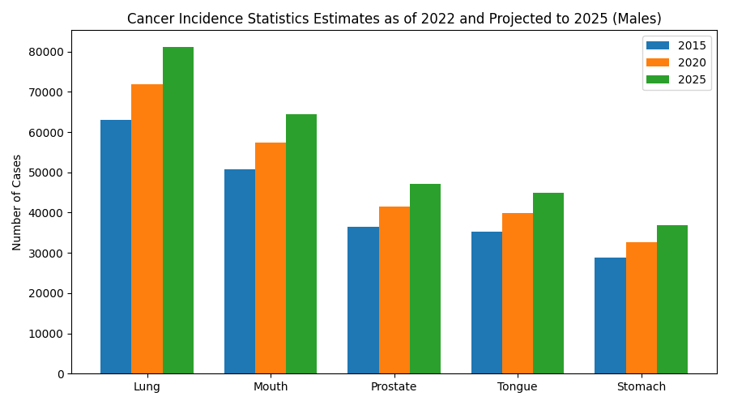

Cancer incidence means the number of newly reported cancer cases during a certain period of time. By studying cancer incidence statistics, scientists can understand which cancers are becoming more common and how the disease burden is changing in both females and males.
Female Cancer Incidence

The graph above represents the estimated cancer incidence among females. Breast cancer has the highest number of cases among all the cancers shown in the graph. From 2015 to 2025, the graph shows a continuous increase in breast cancer cases. Cervix cancer also shows a noticeable rise over time. Ovary cancer, corpus uteri cancer, and lung cancer have lower values when compared to breast cancer, but all of them still increase steadily.
The graph suggests that female-related cancers continue to remain an important health concern. It also highlights the need for awareness programs, regular screening, and early diagnosis.
Male Cancer Incidence

The male incidence graph shows that lung cancer has the highest estimated number of cases. From 2015 to 2025, lung cancer continues to rise steadily. Mouth cancer is the second highest and may be connected to smoking and tobacco chewing habits. Prostate cancer, tongue cancer, and stomach cancer also show gradual increases over the years.
Although the overall numbers are lower compared to the female graph, the same upward trend can still be observed. This indicates that cancer incidence is increasing in both genders.
Main Observations
Highest in Females
Breast Cancer
Highest in Males
Lung Cancer
Overall Trend
Continuous Increase by 2025
Conclusion
From these incidence estimates, it is clear that cancer cases are projected to increase in both females and males by 2025. Female cancers such as breast and cervix cancer show high incidence rates, while lung and mouth cancers remain major concerns in males. These statistics highlight the importance of awareness, healthy lifestyle choices, regular medical checkups, and early detection.